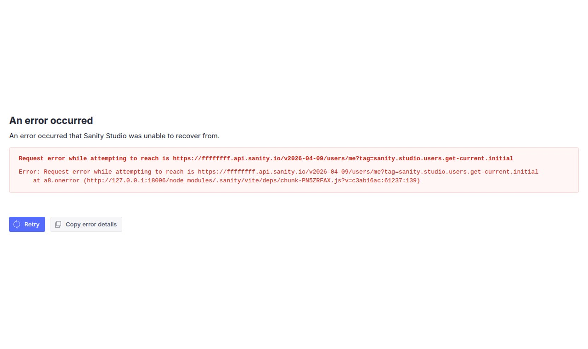

Sanity 5.24 first boot: a fake project ID, a peer-dep wall, and a 516 MB studio
Sanity is the unusual headless CMS where the admin UI ships as an open-source npm package you scaffold yourself, while the actual database — the “Content Lake” — is a commercial managed service at api.sanity.io. We installed Sanity Studio 5.24 on a clean Linux box on 2026-05-07, pointed it at an obviously fake project ID, and watched the two halves of the architecture argue about who's allowed to do what. The studio booted in 864 ms; the Content Lake fired back a verbatim 404 with the project ID echoed in the message; the React-19 peer-dep wall stopped a vanilla install cold; and the on-disk footprint of an empty studio came in at 516 MB across 552 packages. Here are the screenshots, the unedited error JSON, and what the README leaves out.
We're the team behind SimpleReview, a Chrome extension that drafts code-fix PRs on whatever element you click on a broken admin or storefront. We are not affiliated with Sanity, not partners, not customers. This is a deployment note from one real npm install sanity session on one Linux box, dated above. We picked Sanity because it sits in an unusual spot among the headless CMSes we've been auditing — the studio is open-source like Decap or Keystone, but the data plane is closed SaaS like DatoCMS. If we got something wrong, open a GitHub issue and we'll fix it.
The exact commands we ran
# Node 22 LTS already on the box
node --version # v22.21.1
npm --version # 10.9.4
mkdir -p /tmp/sanity-test/my-studio && cd $_
npm init -y
npm install --legacy-peer-deps \
sanity@latest @sanity/vision@latest \
react@^19 react-dom@^19 styled-components@^6
# minimal sanity.config.ts pointing at a fake project ID
# (full file in the appendix below)
npx sanity dev --port 18096 --host 0.0.0.0Notice what we did not run: npm create sanity@latest. That is the path the official docs guide you down, and it's the path that broke first. We'll get to why.
Friction #1 — npm create sanity insists on a login before it'll do anything
The official quick-start command is npm create sanity@latest. It pulls create-sanity@5.2.16 and presents a wizard. We tried the unattended flag (-y) with a fake project ID, intending to scaffold the studio and worry about Content Lake credentials separately. Verbatim:
$ npm create sanity@latest -- -y --bare \
--project ffffffff --dataset production
> npx
> create-sanity -y --bare --project ffffffff --dataset production
› Error: Must be logged in to run this command in unattended mode,
› run `sanity login`
npm error code 1You cannot scaffold a studio — even a --bare one literally documented as “skip the Studio initialization and only print the project ID” — without a logged-in session. sanity login is an OAuth dance through the browser; there's no --token flag on create-sanity. On a CI box, a dev VM with no display, or a fresh workshop container, that's a wall.
The unattended-mode flag (-y) does not actually run unattended. create-sanity still requires a real authenticated user. The -y flag answers yes/no prompts but does not bypass auth.
The fix is to skip create-sanity entirely, install the sanity npm package directly, and write sanity.config.ts by hand — it's eight lines. The scaffolder isn't magic; it's a wizard wrapper around an npm install and a templated config file.
Friction #2 — the React-19 peer-dep wall
Once we'd switched to a manual install, the next obstacle was the peer-dep tree. Sanity 5.24 was published a few weeks before we tested it and it requires React 19. A vanilla npm install sanity react react-dom resolves react@^18 from npm's defaults and explodes:
$ npm install sanity react react-dom styled-components
npm error ERESOLVE could not resolve
npm error
npm error While resolving: my-studio@1.0.0
npm error Found: react@18.3.1
npm error Could not resolve dependency:
npm error peer react@"^19.2.2" from sanity@5.24.0
npm error
npm error Fix the upstream dependency conflict, or retry
npm error this command with --force or --legacy-peer-depsFine, install with the right pin. We did. The studio starts, then immediately throws this in the dev-server log and in a styled error overlay in the browser:
› Error: Failed to start dev server: The following package versions are no
› longer supported and needs to be upgraded:
›
› react (installed: 18.3.1, want: ^19.2.2)
› react-dom (installed: 18.3.1, want: ^19.2.2)
›
› To upgrade, run either:
› npm install "react@^19.2.2" "react-dom@^19.2.2"Credit where it's due — the runtime check is in the studio's startup path and the message names a copy-pasteable upgrade command. The friction is the cliff: no soft warning when you're one minor version behind, only a hard refuse. If you share node_modules with a Next.js 14 app still on React 18, that's now your problem.
Friction #3 — the studio is half a gigabyte for an empty schema
After resolving everything — sanity@5.24.0, @sanity/vision@5.24.0, react@19.2.6, react-dom@19.2.6, styled-components@6.4.1 — the on-disk footprint of an empty studio with one post document type is:
| Phase | Wall clock | Notes |
|---|---|---|
npm install (cold cache) | ~110 s | NVMe disk, 552 packages installed |
node_modules on disk | 516 MB | For one document type with 3 fields |
@sanity/* sub-packages | 46 | Including asset-utils, diff-patch, icons, presentation-comlink, visual-editing-types, codegen, migrate, worker-channels… |
npx sanity dev → ready | 864 ms | Vite 7.3.3 dev server bound to 0.0.0.0:18096 |
First HTTP GET / | 5 ms | Just the HTML shell, 8.9 KB |
| Studio process RSS at idle | 278 MiB | One node process with the Vite dev server |
| Studio process VSZ | 32.9 GiB | Virtual memory; not actually allocated |
For comparison: Keystone 6.5 with two collections, GraphQL playground and a Next.js admin came in at 598 MB and 77 MiB RSS. Sanity Studio with one document type and zero data sits in the same on-disk neighborhood, but pulls 552 packages to get there. The 46 @sanity/* sub-packages include things you won't touch on day one — @sanity/codegen, @sanity/migrate, @sanity/comlink, @sanity/blueprints, @sanity/sdk, @sanity/visual-editing-types — hoisted because the dependency closure doesn't differentiate between “runtime needs this” and “the CLI loads this on demand.”
What the studio actually does when you point it at a fake project ID
Here's the part that's most worth knowing about Sanity's architecture: the open-source studio is not self-contained. It's a Vite-built React app whose first network call — the very first thing that happens when you load the URL after the bundle is parsed — is GET https://<projectId>.api.sanity.io/v<date>/users/me?tag=sanity.studio.users.get-current.initial. The studio is not a CMS; it's a thin client over the Content Lake.
So we wrote the smallest config that would boot, with an obviously bogus project ID, and watched what happened:
// sanity.config.ts
import {defineConfig} from 'sanity'
import {structureTool} from 'sanity/structure'
import {visionTool} from '@sanity/vision'
export default defineConfig({
name: 'default',
title: 'My Studio',
projectId: 'ffffffff',
dataset: 'production',
plugins: [structureTool(), visionTool()],
schema: {
types: [
{
name: 'post',
title: 'Post',
type: 'document',
fields: [
{name: 'title', title: 'Title', type: 'string'},
{name: 'slug', title: 'Slug', type: 'slug', options: {source: 'title'}},
{name: 'body', title: 'Body', type: 'text'},
],
},
],
},
})Boot the studio, hit http://127.0.0.1:18096/, and:

127.0.0.1:18096, configured with projectId: 'ffffffff'. The studio loads, attempts to authenticate against the Content Lake, fails, and renders an unrecoverable error inside its own React error boundary. Captured 2026-05-07 via headless Chromium at 1280×760.The error message is unusually honest: it names the exact URL the studio failed to reach, the request tag (sanity.studio.users.get-current.initial — searchable in the open-source repo), and the source frame inside Vite's pre-bundled chunk. The phrasing “Request error while attempting to reach is…” is a real grammatical bug in the published string — the “is” shouldn't be there. We left it in the screenshot verbatim.
The Content Lake's response, verbatim
To check what the studio was seeing on the wire, we hit the same URL the studio hits and the public query endpoints with deliberately invalid IDs:
$ curl -s -i "https://ffffffff.api.sanity.io/v2026-04-09/users/me?tag=sanity.studio.users.get-current.initial"
HTTP/2 404
content-type: application/json; charset=utf-8
ratelimit-limit: 120
ratelimit-remaining: 119
x-served-by: populus-67997d6488-kxcl2
sanity-gateway: k8s-gcp-eu-w1-prod-ing-01
{"statusCode":404,"error":"Not Found",
"message":"Project with ID \"ffffffff\" not found",
"attributes":{"type":"project"}}And the GROQ query endpoint:
$ curl -s -i "https://invalidproject123.apicdn.sanity.io/v2024-05-07/data/query/production?query=*"
HTTP/2 404
content-type: application/json; charset=utf-8
sanity-gateway: k8s-gcp-eu-w1-prod-ing-01
apicdn-cache-control:
cache-control: public, max-age=10
x-sanity-age: 0
{"error":"Dataset not found",
"statusCode":404,
"message":"Dataset \"production\" not found for project ID \"invalidproject123\""}Three things to notice. First, the envelope echoes your project ID back at you — you can verify client config without grepping. Second, sanity-gateway: k8s-gcp-eu-w1 reveals the upstream is in GCP's europe-west1 region, which matters for latency budgeting and compliance. Third, project IDs are silently lower-cased by the gateway: we sent INVALID as the subdomain and got back "project ID \"invalid\"" in the body — a normalization that has caused bugs elsewhere when SDKs literal-compare configured vs echoed IDs.
CDN and API hosts share path and response schema. The CDN host adds cache-control: public, max-age=10 and x-sanity-age; the live host bypasses caching. @sanity/client@7.22.0 routes through CDN if you pass useCdn: true.
What works, on a real public dataset
The other end of the spectrum — what Sanity feels like when it works — we exercised against the Sanity-published demo dataset (ppsg7ml5 / movies), which is the same one their tutorials use:
$ curl -s "https://ppsg7ml5.apicdn.sanity.io/v2024-05-07/data/query/movies\
?query=*%5B_type%20%3D%3D%20%22movie%22%5D%5B0%5D%7Btitle%7D"
{"query":"*[_type == \"movie\"][0]{title}",
"result":{"title":"WALL·E"},
"syncTags":["s1:EIIvFg"],
"ms":8}That's the GROQ pitch in one curl: a single URL, no client SDK, eight milliseconds from the EU edge. *[_type == "movie"][0]{title} filters to documents of type movie, takes the first one, projects only title. The response includes syncTags for cache invalidation and ms for honest latency. None of this requires auth on a public dataset.
For malformed queries the parser returns source-map-like positions:
$ curl -s "https://ppsg7ml5.apicdn.sanity.io/v2024-05-07/data/query/movies?query=BADGROQ%21%21%21"
{"error":{"description":"expected infix operator, but saw \"!\"",
"end":14,"query":"BADGROQ!!!","start":7,"type":"queryParseError"}}start: 7, end: 14 for a query language is rare. type: "queryParseError" is a stable string a CI integration can branch on.
Pricing — what the open-source studio costs to actually use
Studio is MIT; the Content Lake is metered. Per the pricing page on 2026-05-07, Free (forever) ships 20 seats, 2 public datasets, 10,000 documents, 1M CDN requests/month, 250k API requests/month, 100 GB assets+bandwidth. Growth is $15/seat/month, 50 seats, private datasets, 25,000 documents, with metered overage ($1 per 250k extra CDN requests, $1 per 25k extra API requests, $0.50/GB extra asset storage, $0.30/GB extra bandwidth). Enterprise is contact-sales.
Free is genuinely generous. Growth gets pointed: a 5-editor team is $75/month before overages, $900/year. Self-hosted Keystone with the same 5 editors on a $20/month VPS is $240/year. The trade is operational labor and the Presentation visual editor — which has no good open-source equivalent.
The architectural shape, said plainly
| Layer | What lives here | License | Where |
|---|---|---|---|
| Studio | React app, schema config, plugins, custom inputs | MIT (open source) | Your repo / your hosting / npm package sanity |
| Content Lake | Document store, GROQ query engine, asset pipeline, real-time API, mutations | Closed source (commercial SaaS) | Sanity-managed, GCP europe-west1 |
| API hostnames | api.sanity.io (live), apicdn.sanity.io (cached) | — | Cloudflare-fronted (no cf-ray exposed; via: 1.1 google & sanity-gateway headers expose origin) |
| Asset CDN | cdn.sanity.io for image & file delivery with on-the-fly transforms | — | Sanity-managed |
| Studio ↔ Lake handshake | OAuth via sanity login; cookie-based session for the studio | — | First call: users/me?tag=….initial |
This split is unusual. Most headless CMSes are either fully open (Keystone, Strapi, Directus, Payload) or fully closed (DatoCMS, Contentstack, Hashnode). Sanity ships a real, modifiable, MIT-licensed admin UI that's a shell over a backend you cannot self-host. If the Content Lake goes down, your studio is a tree-view of nothing. The tradeoff buys you Vision, schema-as-code in TypeScript, plugin ecosystem, real-time collaborative editing, and the Presentation visual editor. It costs you vendor lock on the data, 516 MB of node_modules, the React-19 wall, and a login dance to scaffold.
What we wish the README had said up front
- Skip
npm create sanityon a CI box. The unattended flag isn't unattended. Installsanitydirectly and writesanity.config.tsby hand — eight lines. - You're on React 19. Sanity 5.24 hard-fails on React 18. Plan the upgrade for any sibling React apps too.
- The studio is a Content Lake client, not a CMS. Without a real
projectId+datasetthe studio renders a fatal error on page load. No offline mode, no “just show the schema explorer” mode. - Project IDs are case-insensitive on the wire. The gateway lower-cases your subdomain — if your config validation literal-compares IDs, normalize first.
- The Growth seat axis is the cost driver. $15/seat/month is the line item to forecast; API/CDN meters rarely bind under a few million views/month.
What's actually nice about Sanity
- The studio boots in under a second. Vite 7 + hot reload of
sanity.config.tson save makes the iteration cycle fast. - GROQ is a real query language. Filtering, projection, joins, ordering, pagination, references — all in one URL-safe DSL.
- Vision is built in. The GROQ playground ships at
/visionwith no extra config. - The error envelopes are honest. Studio overlay and Content Lake JSON both include URL, project ID, and query position. That's rare.
- The asset pipeline isn't an afterthought.
cdn.sanity.iodoes on-the-fly resize/format/focal-crop by URL params — no separate Imgix. - Free tier is unusually wide. 20 seats, 10k documents, 1M CDN requests/month covers most hobby and small-team sites for $0.
Where this fits
One short, honest write-up per headless CMS we run on a real Linux box. Adjacent: Keystone 6.5.2 first boot (TypeScript + Prisma + GraphQL, fully self-host), DatoCMS in 2026 (closed-source, GraphQL-first, EU SaaS), Decap CMS (open-source studio over Git, no backend at all), Ghost on Linux Docker. SimpleReview is the Chrome extension that turns whatever element you click on a broken admin into a draft code-fix PR — the “Request error while attempting to reach is” grammar bug is exactly the kind of thing it catches.
Demo: SimpleReview on a Sanity issue

# grammar bug — missing object after "reach"
cause: GET https://ffffffff.api.sanity.io/v2024-X/users/me
→ HTTP 404 · projectId "ffffffff" not found